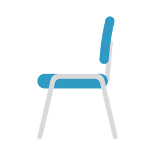
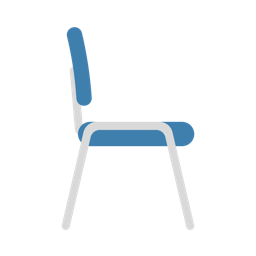
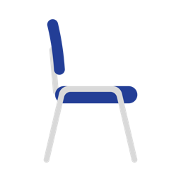
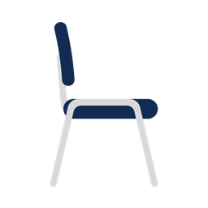

One journey, many on-ramps. Four chairs mark where a person is — and the catalysts in between are how we help them take the next step toward Jesus.

Far from God or simply curious. Not a project — a person invited to explore who Jesus is, at their own pace, inside a real relationship.

Has put their faith in Jesus and is learning what it means to follow Him. The focus: being built up in the basic rhythms and tenets of the faith.

Ready to serve and labor in the harvest. Discovering their gifts and calling, and stepping into the work of ministry alongside others.

Reproducing. Leading in ministry and walking other people through this very same journey — the pathway is now running through them.
The tools above are how we move people — but the engine is relational. Two things run beneath every chair so this stays personal: people, not programs.
“One at a time” gets specific. Everyone keeps a simple circle of people they’re walking with — so disciple-making is who you’re reaching, not just what you attend.
3 · 2 · 1 — a simple rhythm everyone can carry. Pray for them by name.
Before anyone takes a next step, they name where they are. The assessment helps a person find their chair — and gives them vision for what to grow into next.
One pathway. Every ministry. Every campus.
Men’s, Women’s, Kid’s, Student’s, Groups, Guest Experience — different front doors, the same pathway, the same language, the same way of measuring growth: people responding to Jesus’ next challenge. Each ministry plugs its own next steps into this shared framework.